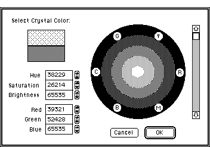
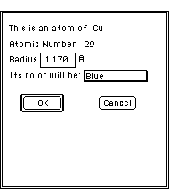

Work Environment:
This section describes general features and functions available with Desktop
Microscopist. It starts with a description of how to control the work environment
with such things as color control, window sizing, scrolling, and setting
magnifications. It continues with a reiteration of the Default concept and
methods to set defaults and finishes with a discussion of cut and paste
operations, printing and file manipulation.
Controlling the Work Environment:
Color and Contrast:
Desktop Microscopist supports color, grey scale and monochrome displays.
Monochrome displays have their particular limitations and are discussed
in a following section.
Desktop Microscopist uses color to help differentiate crystals from one
another, to identify atomic elements in the real lattice object, to color
the lettering in the table objects and to set the background color for window
and table objects. Grey scale coloration is typically used to denote relative
intensity of calculated diffraction spots or diffraction lines. When used
in this capacity the object is best viewed with a black background. The
grey scale option is specifically requested in the active window. Typically,
this option is activated using the object's definition window (See the Define
Dialog Box for the SAD Object). There is no control over the grey scale
Look Up Table (LUT) and a default linear grey scale LUT is used.
Color:Displays;
Color is set for both the background and crystals themselves by using the
standard Apple Color wheel. To access the color wheel for the background,
go to the Set Background Color menu item under the Edit Menu. This action
will bring up the color wheel.

Color Selection Dialog Box
The colors may be set with a combination of scroll bar and mouse or by
inputting the desired RGB (red, green, blue) or HSB (Hue, saturation, brightness)
values. The new background color will immediately be implemented in the
current object. To set the crystal color, it is necessary to go to the specific
crystal definition dialog box and click on the button labeled color. The
color wheel dialog box will again appear and the crystal color may be reset.
Setting the color of elements in the Real Lattice object is more narrowly
defined. This is a result of the need to support rendering or three dimensional
cues in a real lattice plot. Therefore, it is required that a set
of colors be selected for each element. To set a color, double click on
an atom of the given element type. This accesses the color dialog box. Desktop
Microscopist supports: Red, Cyan, Green, Blue, Magenta, Yellow and Orange.

Atom Color Dialog Box
 The Different Transfer Modes:
The Different Transfer Modes:
Desktop Microscopist supports the use of experimental patterns for comparison
and data analysis. Therefore, it is critical to support various methods
for displaying the simulated pattern, with the experimental pattern with
the chosen background and tool in use. Apple Computer supplies built in
methods for handling the display of different overlaid elements. These are
called transfer modes.
Desktop Microscopist has a set of four built in transfer modes which can
be activated by selecting the mode of interest from the Edit
Menu:Transfer Mode.
Monochrome Displays:
Desktop Microscopist was designed for a color environment, but will support
a black and white environment. When using grey scales in a monochrome environment,
Desktop Microscopist attempts to simulate grey scale coloring by substituting
an 8 pattern approximation to grey scale. In the real lattice portion, when
in a render mode, Desktop Microscopist uses these 8 patterns to try and
aid depth cues. When in the non-render default mode, Desktop Microscopist
uses a set of patterns which have been stored for each individual element
type. These patterns are not directly editable but can be accessed using
a program such as ResEdit (distributed by Apple Computer).
Important: In standard plotting mode under the monochrome option,
it is imperative that the color wheels for each crystal are set to contrast
with the background color. If this is not done and there is not sufficient
contrast between the crystal color and the background color, nothing will
be seen. This can be particularly disconcerting when the calculation results
in a blank screen in a window object or an empty list in table object!
Window Control:
Window objects may be re-sized, scrolled and moved as typical Macintosh
windows. For objects such as stereographic projections, Diffractometer and
Real lattice where the scaling is not critical for an understanding of the
information, there is a Redraw option under the Function or Define menu
which will automatically scale and center the plot in the re-sized window.
Table objects are restricted to a set size and access to the complete list
is accomplished by the use of a standard Macintosh scroll bar.
Magnification:
- Depending on the object, Desktop Microscopist allows determination
of the size of the plot or graph. As detailed in the above section on window
control, in objects such as the stereographic projection the size of the
window may be used to determine the size of the graph. Another feature of
the stereogram, the Kikuchi map and the Kossel map is the ability to Zoom
in around a particular region of the plot. Zooming is accomplished by selecting
the Zoom In item under the Rotation Menu. The .i.Zoom ;cursor is then activated.
Clicking the mouse at the point of interest activates the zoom box. Then,
while holding the mouse down, drag the mouse, pulling a box around the region
to be enlarged. Alternatively, clicking at the point of interest will cause
the view to be expanded to twice its original size. The stereogram or Kikuchi
map is not automatically rotated and centered around the selected point.
- In the Real Lattice object, crystal size is controlled in several
ways: by a scaling factor, Zoom In which zooms the picture by 2x, Zoom Out
which zooms the picture by .5x and an automatic zoom feature which fits
the lattice picture to the size of the current window.
- For objects which depend on a specific conversion factor such as SAD
or the Debye-Scherrer program, there are two ways to set magnification of
the plot:
- The first is by setting the camera constant for the figure. The camera
constant or camera length is found in the Beam Object Dialog Box. This figure
is exactly the same as the camera constant determined experimentally for
a specific instrument.
- The second technique sets a screen magnification by specifying a distance
on the screen and then converting this to an equivalent distance on a diffraction
pattern. This option is accessed by using <option> m when using either
the menu items Set Magnification
(Ring M) and Set Magnification (Line Method). This action brings up
the Magnification
dialog box. The magnification is set automatically by inserting the
actual distance which corresponds to the distance specified on the screen.
Plotting; (labeling type and spot shape):
Control of the spots to be plotted is done from the Set
Plot Parameter dialog box. This dialog box allows plane and direction
spot types (square, filled square, diamonds, circles, default type filled
circles, crosses, x's and plus signs) to be set independently for each crystal.
This feature is useful when printing patterns and when using a monochrome
monitor. Upon setting the plot parameters, the automatic re-plot will cause
the patterns to change for the individual crystal spots. The change is automatic
and immediate. This is a universal feature and not specific to an individual
window..
Hexagonal Indices:
Desktop Microscopist supports three and four index hexagonal labels. This
option is accessed through the
Set Misc. Parameters Dialog Box. This is a universal feature and not
specific to an individual window. It is also immediate and automatic on
re-plot.
Cutting and Pasting:
Limited cutting and pasting is supported by Desktop Microscopist. Plots
are cut as bit maps and may be pasted into any program which supports bit
maps. Desktop Microscopist also supports multiple cutting and pasting within
the program. As an example, it is possible to cut an 001 zone axis diffraction
pattern, a 110 zone axis diffraction pattern and to paste it into a stereographic
projection. Pictures may be deleted and moved on an individual or joint
method. To move a single picture, simply click the mouse and drag the picture.
Where two pictures overlap, the top one will be selected. Deletion of a
picture can be accomplished by using the Clear option under the Edit Menu
or by pressing the <delete> key.
Desktop Microscopist enables the user to make slight variations of basic
parameters to more effectively compare with experimental information. The
program allows different data sets to be displayed, while providing a straightforward
mechanism for the transfer of data from window to window. This is accomplished
through the use of Default information. The primary information necessary
to run a particular object is stored in a Default file. This file is transferred
to each new window or table as it is opened. To Transfer information into
the Default File, Use the Default<->Current
Dialog Box .
Author:James T. Stanley J.
Stanley
 Desktop
Manual
Desktop
Manual
Distributed By: Virtual
Labs
Last Updated:1/12/96 Sat, Apr 27, 1996